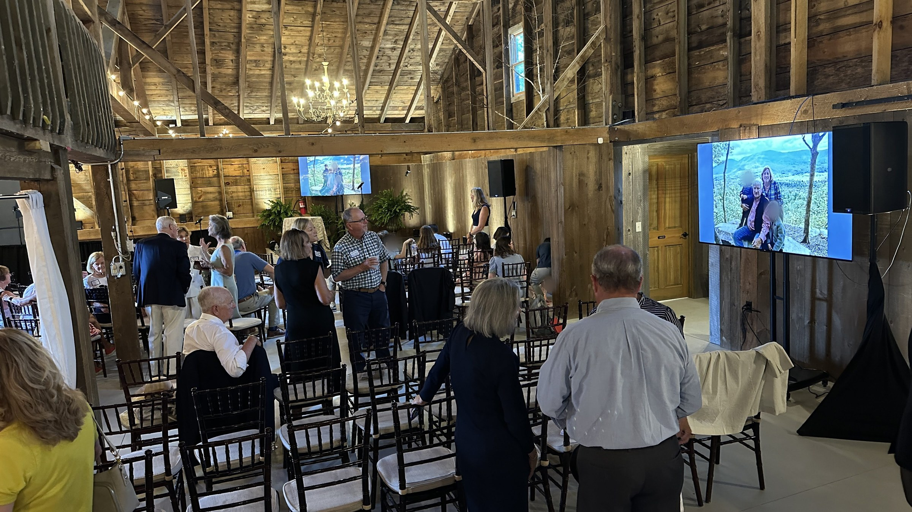
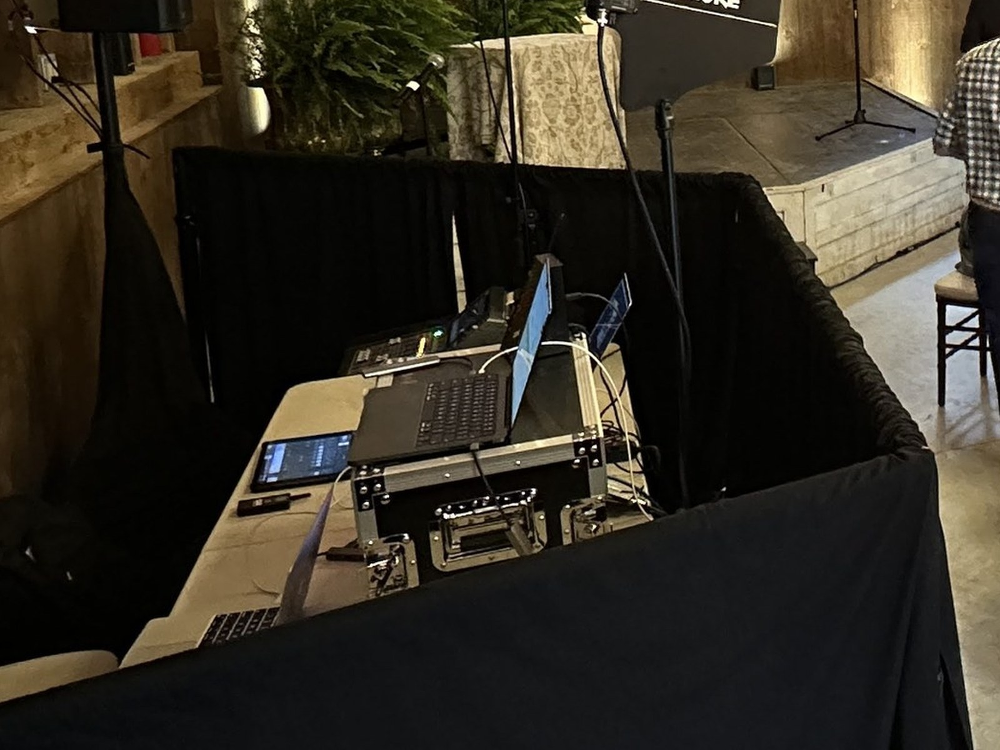

A Celebration of Life for a Dorset business leader. Three screens. Clear sound. The room held the moment.
On July 28, 2026, family and friends gathered at The Old Gray Barn in Dorset to celebrate the life of a local business leader — a father, grandfather, and friend to the community. The barn’s post-and-beam quiet is a gift for afternoons like this: warm wood, soft daylight, and a room that asks the production to stay present without becoming the story. We’ve worked across Dorset for years. This one needed a careful hand.
Three 75" monitors carried photo and presentation content so every seat could see the person being remembered. Audio was a four-speaker system with two wireless handheld microphones for remembrances, plus background music between segments. Eighteen uplights around the barn perimeter warmed the timber without competing with the string lights and chandelier already in the space. At the tech table: video switcher, digital mixer, wireless mics with antenna distribution, Perfect Cue, music and presentation laptops, and a clean input for the family’s laptop when they needed it.
Load-in started Sunday, July 27 at 11:00 a.m. That afternoon we ran a family and friends rehearsal from 3:00 to 4:15 — walking cues, mic handoffs, and slide timing so show day felt familiar. On Monday we arrived at noon. The Celebration of Life ran from 2:00 to 5:00 p.m. We operated displays, sound, lighting, and playback throughout. Afterward, the family received a polished audio recording — a keepable document of the voices in the room.

